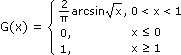

Verteilungen - Aufgaben 1
1.
Bestimme a) die Verteilungsfunktion F(x) und damit die Wahrscheinlichkeit P(0 ≤ X ≤ 6), b) die Quantilfunktion F–1(α) und damit das 0,70-Quantil einer stetigen Zufallsvariablen X mit Dichtefunktion
f(x) = ·
1
π
3
x2 – 2x + 10
Bestimme a) die Verteilungsfunktion G(x) und damit die Wahrscheinlichkeit P(0,8 ≤ X ≤ 2), b) die Quantilfunktion G–1(α) und damit das 0,83-Quantil einer stetigen Zufallsvariablen X mit Dichtefunktion
g(x) =  ·, 0 < x < 10, sonst
·, 0 < x < 10, sonst
1
π
1
√x(1 – x)
3.
Gegeben sind die Punkte (10|80), (21|61), (25|48) im kartesischen Koordinatensystem. Bestimme durch Extremwertberechnung die Gerade y(x) = a+bx so, dass die Summe ihrer vertikalen Abstandsquadrate zu den gegebenen Punkten minimal ist.
Bestimme den Luftduck y auf Seehöhe x durch exponentielle Regression, wenn
Hinweis: Setze y^ = lny (2 Nachkommastellen) und bestimme y^(x) durch lineare Regression.
| x (in km) | 5 | 10 | 15 |
| y (in hPa) | 652 | 235 | 202 |
Hinweis: Setze y^ = lny (2 Nachkommastellen) und bestimme y^(x) durch lineare Regression.
5.
Die Wahrscheinlichkeit bei voneinander unabhängigen Bohrungen auf Öl zu stoßen sei jeweils 8%. Berechne a) die Wahrscheinlichkeit, bei 20 Bohrungen mindestens 2-mal Öl zu finden, b) den Erwartungswert für die Anzahl der Ölfunde bei 50 Bohungen, c) die Anzahl der Bohrungen, sodass die Wahrscheinlicheit, auf Öl zu stoßen, bei 90% liegt.
6.
Setzt man den Jeton zwischen 2 Zahlen des Roulette-Tableaus (mit den Zahlen 0-36) und eine davon wird ausgelost, erhält man den Einsatz und das 17fache davon retour. Welchen Gewinn erwartet die Bank, wenn ein Spieler 100-mal einen Euro so setzt?
7.
Ein Byte bestehe aus 7 Datenbits + 1 Paritätsbit, sodass das Byte immer eine gerade Anzahl von 1en hat. Die Wahrscheinlichkeit, dass ein Bit falsch übertragen wird, sei 0,25%. Berechne die Wahrscheinlichkeit, dass bei der Übertragung eines Bytes alle Datenbits richtig ankommen, wenn kein Paritätsfehler registriert wird.
Ergebnisse:
1. a) F(x) =
1
2
1
π
x – 1
3
π
2
2. a) ; 29,5% b) G–1(α) = sin2
π
2
3. y = 101,21–2,05x 4. y = 1012e–0,117x 5. a) 48,3% b) 4 c) 28
6. 2,7 € 7. 99,98%